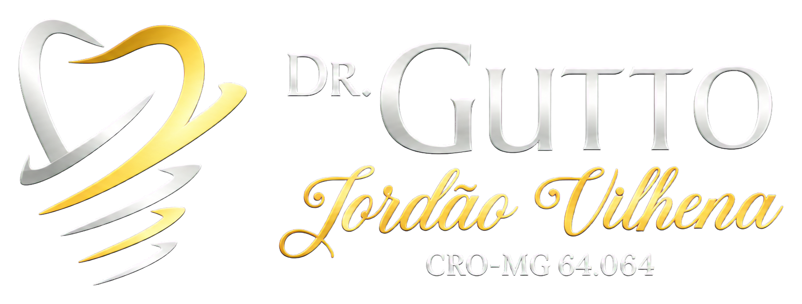

1. Quem é o responsável pelo site
O site apresenta informações profissionais do Dr. Gutto Jordão Vilhena, cirurgião-dentista, CRO-MG 64.064, com atendimento na Rua Martins Alfenas, 1918, Centro, Alfenas-MG.

Privacidade
Esta política explica como o site do Dr. Gutto Jordão Vilhena apresenta informações de contato e trata dados enviados voluntariamente pelos canais de atendimento.
Última atualização: 7 de julho de 2026O site apresenta informações profissionais do Dr. Gutto Jordão Vilhena, cirurgião-dentista, CRO-MG 64.064, com atendimento na Rua Martins Alfenas, 1918, Centro, Alfenas-MG.
Este site não possui formulário próprio. Quando o visitante escolhe entrar em contato por WhatsApp, telefone, e-mail, Instagram ou Google Maps, ele pode enviar dados como nome, telefone, e-mail, mensagem e informações necessárias para solicitar atendimento.
Os dados enviados voluntariamente são usados para responder mensagens, orientar sobre agendamento, confirmar informações de contato e dar continuidade ao atendimento solicitado.
O site contém links para WhatsApp, Instagram e Google Maps. Ao acessar esses serviços, o visitante passa a estar sujeito às políticas de privacidade e aos termos dessas plataformas.
Nesta versão, o site não usa formulário próprio, área de login ou cookies de rastreamento configurados diretamente no código. Caso ferramentas de análise ou anúncios sejam adicionadas no futuro, esta política deverá ser atualizada.
O titular pode solicitar informações sobre seus dados, correção, atualização ou exclusão, quando aplicável, pelos canais de contato do consultório.
Para dúvidas sobre privacidade ou atendimento, entre em contato pelo e-mail guttodentista@outlook.com ou pelo WhatsApp +55 35 99133-8862.